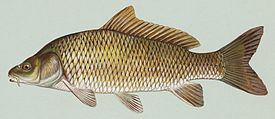

Карп
Саза́н[2], или обыкновенный карп[1][3] (лат. Cyprinus carpio) — вид пресноводных лучепёрых рыб семейства карповых. Методом селекции получены культурные формы. Внесён в международный список 100 самых опасных инвазивных видов.
Cyprinus carpio, или карп обыкновенный, внесён в международную красную книгу как вид, находящийся под угрозой исчезновения[4].
Крупная всеядная рыба с толстым, умеренно удлинённым телом, покрытым крупной, гладкой, плотно сидящей чешуёй. Бока золотистого цвета, спина темноватая. Расцветка может изменяться в зависимости от места обитания. У основания каждой чешуйки имеется темное пятнышко, край чешуй окаймлен чёрной точечной полоской. Чешуй в боковой линии 32-41.
Встречаются, хотя и редко, экземпляры весом свыше 20 кг и более метра длиной.
Голова большая. Рот полунижний, выдвижной. Губы хорошо развиты. На верхней губе имеются две пары хорошо развитых коротких усов.
Спинной плавник длинный с небольшой выемкой, анальный — короткий. В спинном и анальном плавниках имеется по зазубренному колючему лучу («пилке»).
Внутри одомашненной формы европейского сазана существуют зеркальные, или королевские карпы (Cyprinus rex cyprinorum) с очень немногочисленными рядами чрезвычайно крупных чешуй и голым остальным телом и кожистые карпы (Сyprinus nudus) с совершенно голой кожей.
Одомашненная форма амурского сазана — ярко окрашенные декоративные карпы кои.